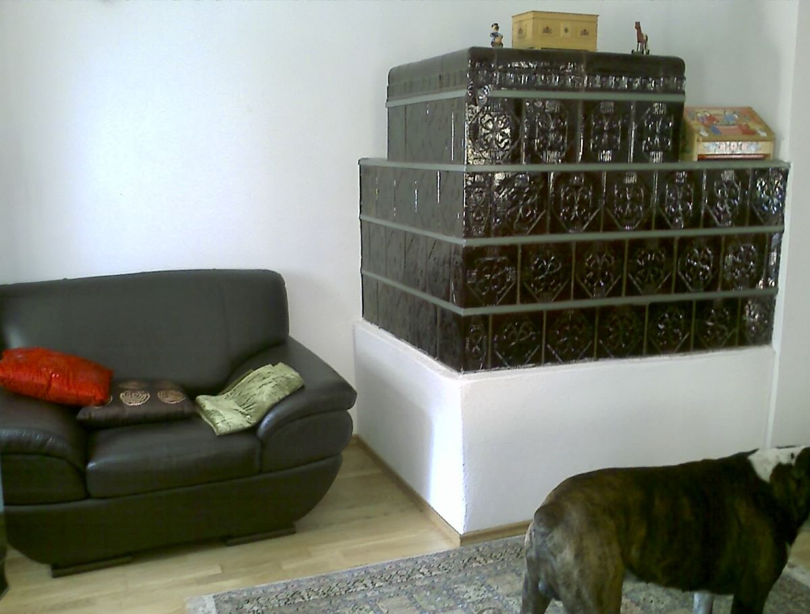
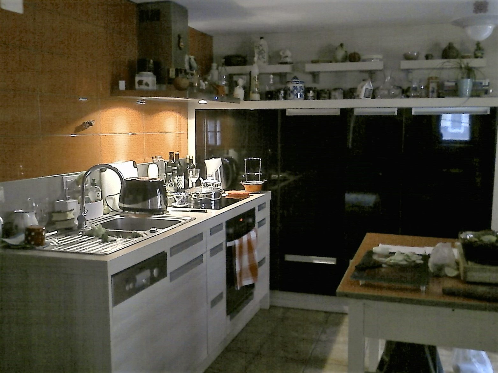
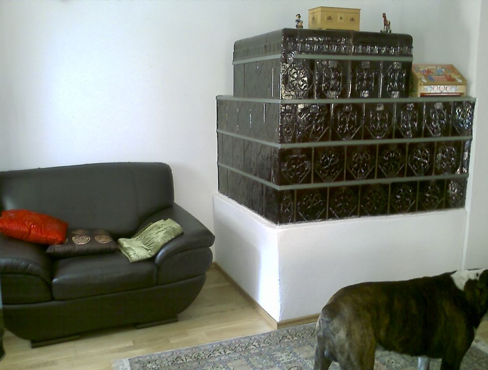
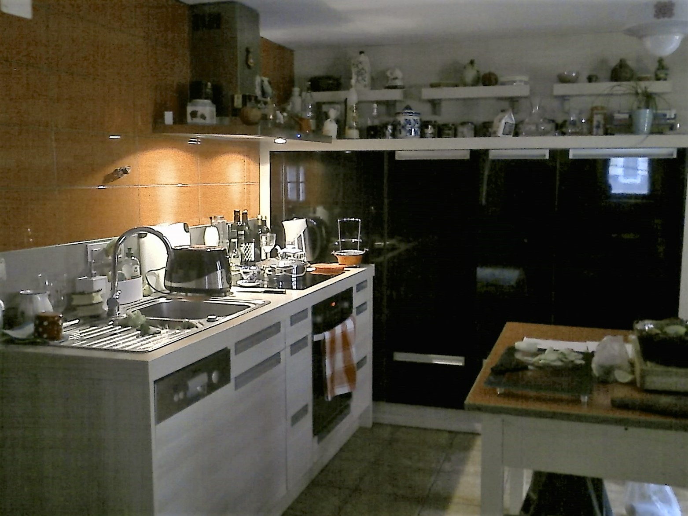

Authentic house for sale in Kropa
In the serene Lipnica Valley, nestled amidst forests and mountains, we present an authentic house for sale, built in 1713, fully renovated in 2015. It is one of some special genuine saved houses in central historical part of the village. This remarkable building spans 270 sqm across four levels, featuring two separate apartments (with the potential to create a third). Additionally, the property includes a garage and offers access to public parking spaces.
The ground floor comprises a garage, a room for heating, and the entrance. On the first floor, you'll find a living room, a kitchenette, a double bedroom, a bathroom with a bath, bidet, and closet, as well as an additional bedroom. Moving up to the second floor, there is a hallway leading to a double bedroom, a bathroom with a shower, bidet, and closet, an equipped kitchen with balcony, a huge cold storage room, and a living room adorned with an authentic Slovenian furnace. A staircase from this apartment leads to a spacious storage room located in the attic on the third floor. Work has already begun to transform this space into a separate 80 sqm apartment with a balcony and terrace, ideal for barbeque.
The property has been renovated and equipped with double-glass aluminum frames, an alarm system, and a safe. It boasts independent heating. Strategically positioned just a 30 minutes away from Liubljana Airport and the popular trails of the Julian Alps, the house offers easy access to picturesque destinations. The enchanting Lake Bled located just a few kilometers away, and the serene Lake Bohinj is also not far, serve as excellent getaways from the hustle and bustle of the city. This property is ideal for investment purposes or as a first or second home for those who appreciate authenticity and a tranquil community lifestyle. Despite being situated in the center of Kropa, the house enjoys a peaceful ambiance and serenity, thanks to its double-glass aluminum fixtures.
Price: €300,000 (negotiable). Don't miss out on this opportunity!
 


